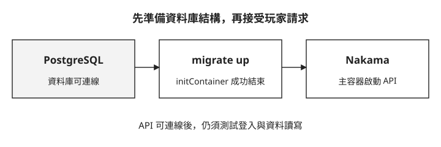
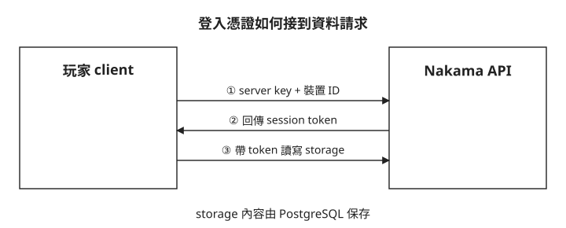

Day 5: 玩家離開對戰後，資料存在哪裡？¶
玩家完成一場對戰，GameServer 隨後結束。隔天重新登入時，他還應該看得到自己的進度。前幾天建立的 Fleet 與 UDP 路由能讓玩家進入對戰；這份需要跨越對戰生命週期的資料，該由誰保存？
本章用 Nakama 接收玩家的登入與資料讀寫請求，再由 PostgreSQL 保存資料。你會先確認資料庫結構準備完成，再登入、寫入一筆內容並讀回。做完後，遇到「Pod 已經 Running，但玩家仍讀不到資料」，就能分開檢查啟動、身分驗證與資料讀寫三個階段。
先分清楚對戰與玩家資料的生命週期¶
Agones 的 GameServer 負責一場正在進行的遊戲；Nakama 是遊戲後端伺服器，本章讓它負責辨認玩家與處理持久資料。Nakama 提供的資料讀寫 API 稱為 storage；實際資料放在 PostgreSQL，而不是只留在 Nakama Pod 的記憶體。
Nakama 不能在空資料庫裡直接讀寫自己的資料表。啟動前要先執行 migration，也就是依版本建立或更新資料庫結構。這裡把 migrate up 放進 Kubernetes 的 initContainer：它成功結束後，主容器才開始執行。請沿著圖中的順序看，資料庫可連線與 HTTP API 可連線是兩個不同的檢查點。

因此，Nakama 主容器尚未啟動時，要先看 migration 的 log；API 已啟動卻不能存資料時，才繼續檢查登入憑證與 storage 回應。Running 本身不足以證明整條流程成功。
準備檔案與資料庫密碼¶
延續前幾天的 Kubernetes 叢集，本章使用單副本 PostgreSQL 16 與 Nakama 3.40.0。PVC（PersistentVolumeClaim） 是向 Kubernetes 申請持久儲存空間的資源，本章用它申請保存 PostgreSQL 資料的磁碟空間。StorageClass 定義儲存空間的類型與配置方式，讓 Kubernetes 能依 PVC 的需求配置儲存空間。兩者的關係可參考 Kubernetes 持久儲存文件。
叢集需要具有名為 default、可配置 4Gi PVC 的 StorageClass；本機需要 kubectl、openssl 與 curl。這是理解串接方式的配置，尚未涵蓋資料庫高可用、備份還原或多使用者權限測試。
先查詢叢集的 StorageClass 名稱與預設標記（依官方文件補上，本課沒有實跑），指令見 Kubernetes v1.34 官方文件：
NAME 欄列出 StorageClass 名稱，名稱後方的 (default) 才表示它是叢集預設值。完整的 postgres.yaml 明確指定 storageClassName: default，因此需要名稱為 default 的 StorageClass，不要求它同時是叢集預設值；指定名稱的行為見 Kubernetes v1.34 PVC Class 文件。若查不到名為 default 的項目，就不符合本章前提，請先確認儲存配置再繼續；不能直接假設換成其他 StorageClass 也能成功。
操作使用課程儲存庫的 labs/sprint5/day5/ 目錄，請先在終端機切換到這個目錄。下面的 YAML 是閱讀用節錄；實際套用的是目錄內完整的 postgres.yaml 與 nakama.yaml，不能只把節錄存成檔案部署。
建立 nakama namespace，並將資料庫密碼存進 Secret：
kubectl create namespace nakama
kubectl -n nakama create secret generic nakama-db \
--from-literal=postgres-password="$(openssl rand -hex 24)"
稍後會把密碼放進 username:password@host:port/database 格式的連線字串，本章請沿用上面的 openssl rand -hex 24，產生只含十六進位字元的密碼。
先讓 PostgreSQL 可以保存資料¶
完整的 postgres.yaml 包含 StatefulSet、Service 與 PVC。StatefulSet 管理需要固定身分與持久儲存的 Pod，讓本章的 postgres-0 在重建後仍能掛回原本的資料儲存空間；這是 StatefulSet 與 PVC 在這裡的用途。閱讀節錄時，先找三個地方：資料庫名稱 nakama、密碼取自哪個 Secret，以及資料目錄掛到哪個 volume。
apiVersion: apps/v1
kind: StatefulSet
metadata:
name: postgres
namespace: nakama
spec:
serviceName: postgres
replicas: 1
template:
spec:
containers:
- name: postgres
image: postgres:16-alpine
env:
- name: POSTGRES_DB
value: nakama
- name: POSTGRES_USER
value: postgres
- name: POSTGRES_PASSWORD
valueFrom:
secretKeyRef:
name: nakama-db
key: postgres-password
volumeMounts:
- name: data
mountPath: /var/lib/postgresql/data
volumeClaimTemplates:
- metadata:
name: data
spec:
resources:
requests:
storage: 4Gi
在上述目錄執行 kubectl apply -f postgres.yaml。已用 kubectl create 建立的 namespace 可能出現缺少 last-applied-configuration annotation 的警告；它不代表資料庫部署失敗。接著讀實際狀態：
$ kubectl -n nakama get pods,sts,svc,pvc -o wide
NAME READY STATUS RESTARTS AGE IP NODE NOMINATED NODE READINESS GATES
pod/postgres-0 1/1 Running 0 2m38s 10.244.1.86 aks-system-26490877-vmss000001 <none> <none>
NAME READY AGE CONTAINERS IMAGES
statefulset.apps/postgres 1/1 2m38s postgres postgres:16-alpine
NAME TYPE CLUSTER-IP EXTERNAL-IP PORT(S) AGE SELECTOR
service/postgres ClusterIP 10.0.36.156 <none> 5432/TCP 2m38s app.kubernetes.io/name=postgres
NAME STATUS VOLUME CAPACITY ACCESS MODES STORAGECLASS VOLUMEATTRIBUTESCLASS AGE VOLUMEMODE
persistentvolumeclaim/data-postgres-0 Bound pvc-<pvc-uuid> 4Gi RWO default <unset> 2m38s Filesystem
這裡 PostgreSQL 是 1/1 Running、PVC 是 Bound，表示容器已就緒且儲存空間已配置。postgres Service 的 5432 port 則是下一個步驟使用的資料庫入口。輸出中的節點名與 IP 是範例環境的結果，不需要在自己的環境照填。
用 migration 與啟動 log 判斷 Nakama 是否就緒¶
完整的 nakama.yaml 讓 migration 與主容器使用同一組資料庫連線設定。看下面兩行執行指令的差別：第一個只更新 schema，第二個才啟動服務。
initContainers:
- name: migrate
image: heroiclabs/nakama:3.40.0
command:
- /bin/sh
- -ec
args:
- |
DB_ADDR="postgres:${POSTGRES_PASSWORD}@postgres.nakama.svc.cluster.local:5432/nakama"
/nakama/nakama migrate up --database.address "$DB_ADDR"
containers:
- name: nakama
image: heroiclabs/nakama:3.40.0
command:
- /bin/sh
- -ec
args:
- |
DB_ADDR="postgres:${POSTGRES_PASSWORD}@postgres.nakama.svc.cluster.local:5432/nakama"
exec /nakama/nakama --name nakama-0 --database.address "$DB_ADDR" --logger.level INFO --session.token_expiry_sec 7200
執行 kubectl apply -f nakama.yaml 後，先查部署狀態。把 <context-name> 換成自己叢集的 kubectl context 名稱；若 Nakama Pod 尚未顯示 1/1 Running，稍後重複執行同一個查詢：
若持續未就緒，查詢 events，並用下一個 log 指令檢查 migrate 容器，確認啟動停在哪個階段：
等 Nakama Pod 顯示 1/1 Running 後，再依序讀 migration 與主容器的 log，確認是否有下面的成功訊息。先讀 migrate 容器：
$ kubectl -n nakama logs deployment/nakama -c migrate --tail=200
{"level":"info","ts":"2026-09-02T02:30:13.597Z","caller":"server/db.go:142","msg":"Database information","version":"PostgreSQL 16.15 on x86_64-pc-linux-musl, compiled by gcc (Alpine 15.2.0) 15.2.0, 64-bit"}
{"level":"info","ts":"2026-09-02T02:30:13.597Z","caller":"migrate/migrate.go:109","msg":"Applying database migrations","limit":-1}
{"level":"info","ts":"2026-09-02T02:30:14.476Z","caller":"migrate/migrate.go:116","msg":"Successfully applied migration","count":19}
Successfully applied migration 表示這次初始化成功套用 19 個 migration。這是新資料庫的實測結果；已有資料庫再次執行時，不應把「一定要新增 19 個」當成成功條件。
接著讀主容器的 log，確認它連上相同資料庫，並啟動 HTTP API：
$ kubectl -n nakama logs deployment/nakama -c nakama --tail=120
{"level":"info","ts":"2026-09-02T02:30:15.210Z","caller":"main.go:145","msg":"Node","name":"nakama-0","version":"3.40.0+d4d92f9","runtime":"go1.26.5","cpu":2,"proc":2}
{"level":"info","ts":"2026-09-02T02:30:15.240Z","caller":"server/db.go:142","msg":"Database information","version":"PostgreSQL 16.15 on x86_64-pc-linux-musl, compiled by gcc (Alpine 15.2.0) 15.2.0, 64-bit"}
{"level":"info","ts":"2026-09-02T02:30:15.262Z","caller":"server/api.go:329","msg":"Starting API server gateway for HTTP requests","port":7350}
{"level":"info","ts":"2026-09-02T02:30:15.580Z","caller":"main.go:243","msg":"Startup done"}
Starting API server gateway 指向 7350，Startup done 表示啟動完成。再對照 Pod 與 Service：
NAME READY STATUS RESTARTS AGE IP NODE NOMINATED NODE READINESS GATES
pod/nakama-5fc787f857-qpkfh 1/1 Running 0 2m15s 10.244.2.3 aks-gamesrv-18046246-vmss000003 <none> <none>
NAME TYPE CLUSTER-IP EXTERNAL-IP PORT(S) AGE SELECTOR
service/nakama ClusterIP 10.0.174.16 <none> 7349/TCP,7350/TCP,7351/TCP 2m16s app.kubernetes.io/name=nakama
Service 是 ClusterIP，沒有對外 IP。今天只使用 7350 的 REST API；它也提供下一章配對需要的 WebSocket 入口。表中的 7349 與 7351 分別供 gRPC API 與管理介面使用，今天不需要連線。
從本機確認 API 入口¶
在一個終端機保留 port-forward 執行，再開第二個終端機執行 curl。兩行指令不會在同一個前景終端機連續完成：
$ kubectl -n nakama port-forward service/nakama 7350:7350
Forwarding from 127.0.0.1:7350 -> 7350
Forwarding from [::1]:7350 -> 7350
$ curl -i -sS http://127.0.0.1:7350/healthcheck
HTTP/1.1 200 OK
Cache-Control: no-store, no-cache, must-revalidate
Content-Type: application/json
Grpc-Metadata-Content-Type: application/grpc
Vary: Accept-Encoding
Date: Wed, 02 Sep 2026 02:30:58 GMT
Content-Length: 2
{}
這個 HTTP 200 證明本機能透過 port-forward 連到 Nakama；它還沒有證明某位玩家可以寫入並讀回自己的資料。下一步才會檢查這件事。
登入後，帶同一位玩家的憑證讀寫資料¶
Device authentication 用裝置識別字串辨認玩家。本章以它建立測試帳號，Nakama 回傳的 session token 是後續 API 請求的登入憑證。先看圖中的兩種憑證：建立登入時使用 server key；登入成功後，資料請求改帶玩家自己的 session token。

defaultkey 是這份練習設定的預設 server key。執行範例時，把 <device-uuid> 換成自己這次測試的唯一識別字串；後續 Bearer <redacted> 要換成登入回應的 token，不是 refresh_token。<redacted> 是紀錄遮蔽值，不能照貼當作憑證。
$ curl -sS -w '\nHTTP_STATUS:%{http_code}\n' \
-X POST 'http://127.0.0.1:7350/v2/account/authenticate/device?create=true' \
--user 'defaultkey:' \
-H 'Content-Type: application/json' \
-d '{"id":"sprint5-day5-<device-uuid>"}'
{
"created": true,
"token": "<redacted>",
"refresh_token": "<redacted>"
}
HTTP_STATUS:200
$ curl -sS -w '\nHTTP_STATUS:%{http_code}\n' \
-H 'Authorization: Bearer <redacted>' \
'http://127.0.0.1:7350/v2/account'
{
"user": {
"id": "<user-id>",
"username": "SnkYKrmmZC",
"create_time": "2026-09-02T02:31:40Z"
},
"wallet": "{}"
}
HTTP_STATUS:200
created: true 表示建立了帳號；接著 /v2/account 回傳的 user.id，就是稍後讀取 storage 所需的 <user-id>。請記下自己回應中的值，且保持使用同一位玩家的 token。
一筆 storage object 用 collection、key 與擁有者識別。collection 是資料分組，key 是該組裡的物件名稱；以玩家進度為例，可以用 saves 分組保存存檔，再用 savegame 命名其中一筆進度。這種分組方式可參考 Nakama collections 文件。
下面實作用玩家自己的 day5 collection 裡的 gate 物件測試讀寫。value 存放 JSON 內容，permission_read: 1 與 permission_write: 1 允許擁有者讀寫。把 <nonce> 換成這次測試的識別字串，稍後便能確認讀回的是這一次寫入的資料。
$ curl -sS -w '\nHTTP_STATUS:%{http_code}\n' \
-X PUT 'http://127.0.0.1:7350/v2/storage' \
-H 'Authorization: Bearer <redacted>' \
-H 'Content-Type: application/json' \
-d '{
"objects": [
{
"collection": "day5",
"key": "gate",
"value": "{\"sprint\":5,\"day\":5,\"gate\":\"storage-roundtrip\",\"nonce\":\"20260902T023140Z-<nonce>\"}",
"permission_read": 1,
"permission_write": 1
}
]
}'
{
"acks": [
{
"collection": "day5",
"key": "gate",
"version": "dfcdf4139104b7e3adf60672e5dac2c0",
"user_id": "<user-id>",
"create_time": "2026-09-02T02:31:40.962190Z",
"update_time": "2026-09-02T02:31:40.962190Z"
}
]
}
HTTP_STATUS:200
寫入回應的 acks 是確認訊息；其中 version 是這個物件版本的識別值。還要用同一位玩家的 token，以及上一步取得的 <user-id> 讀回內容：
$ curl -sS -w '\nHTTP_STATUS:%{http_code}\n' \
-X POST 'http://127.0.0.1:7350/v2/storage' \
-H 'Authorization: Bearer <redacted>' \
-H 'Content-Type: application/json' \
-d '{
"object_ids": [
{
"collection": "day5",
"key": "gate",
"user_id": "<user-id>"
}
]
}'
{
"objects": [
{
"collection": "day5",
"key": "gate",
"user_id": "<user-id>",
"value": "{\"day\": 5, \"gate\": \"storage-roundtrip\", \"nonce\": \"20260902T023140Z-<nonce>\", \"sprint\": 5}",
"version": "dfcdf4139104b7e3adf60672e5dac2c0",
"permission_read": 1,
"permission_write": 1,
"create_time": "2026-09-02T02:31:40Z",
"update_time": "2026-09-02T02:31:40Z"
}
]
}
HTTP_STATUS:200
比較 value 時，先解析成 JSON 再比欄位內容：回應改變了欄位順序與空白，字串不同不代表資料不同。這裡相同的 collection、key、user id、version 與內容，一起支持「這位玩家剛寫入的資料可以讀回」。單看 HTTP 200 只能證明請求成功回應。
想一想¶
- healthcheck 回 HTTP 200，卻沒有測 storage，還缺少哪一段證據？
- migration 成功後，主容器仍連不上資料庫，為什麼要先比對兩者的連線設定？
- 寫入與讀回的 JSON 欄位順序不同，應如何判斷是不是同一份資料？
小結¶
玩家資料跨越單場對戰的生命週期，所以本章用 Nakama 接收 API 請求、PostgreSQL 保存資料。追查問題時依序區分資料庫與 migration、API 入口、玩家憑證及 storage 內容。正式服務還需要另外規劃資料庫備份與高可用、更換預設金鑰、設定對外入口與 TLS，並測試權限拒絕與並行寫入衝突，這些都不能由本章單一玩家的成功讀寫推論。
延伸閱讀¶
想再深入，可以從這幾份開始：
- Nakama commands：查
migrate up與資料庫連線參數。 - Storage collections：查 collection、key 與物件的識別方式。
- Storage permissions：對照讀寫權限數值。
下一步¶
玩家能登入與保存資料後，還需要知道去哪一台 GameServer。Day 6 會把兩位玩家的配對結果接到 Agones allocation，並讓他們收到同一組遊戲伺服器位置。
Nakama 標誌為 Heroic Labs 之官方資產，此處作社群教學用途。